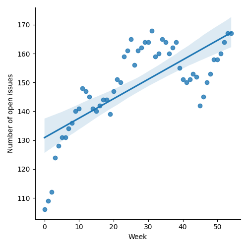
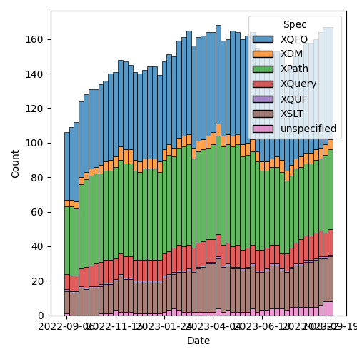
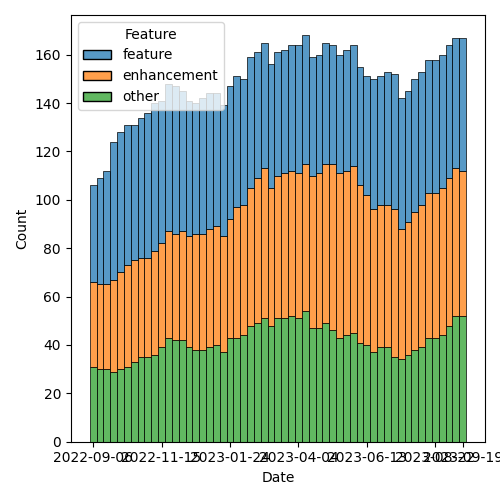

QT4 CG Meeting 047 Minutes 2023-09-26
Table of Contents
Agenda index / QT4CG.org / Dashboard / GH Issues / GH Pull Requests
Draft Minutes
Summary of new and continuing actions [0/8]
[ ]QT4CG-029-07: NW to open the next discussion of #397 with a demo from DN- See PR #449. Discussion planned for meeting 048, 3 October 2023.
[ ]QT4CG-045-02: RD to address comments on HTML namespaces in another PR[ ]QT4CG-046-01: MK to continue the work on #129 for the other specs (we accepted #703)[ ]QT4CG-046-02: RD to draft the specification changes to allow record(*)[ ]QT4CG-046-03: MK to roll back the changes related to default namespaces for elments and types (issue #372)[ ]QT4CG-046-04: CG to flesh out changes related to annotations in other parts of the specs[ ]QT4CG-046-05: NW to updated parse-uri to use decode-from-uri (issue #566)[ ]QT4CG-047-01: MK to make a PR that renames break-when to split-when
1. Administrivia
1.1. Roll call [10/11]
Regrets: CG.
[X]Reece Dunn (RD)[X]Sasha Firsov (SF)[ ]Christian Grün (CG)[X]Joel Kalvesmaki (JK)[X]Michael Kay (MK)[X]John Lumley (JL)[X]Dimitre Novatchev (DN)[X]Wendell Piez (WP)[X]Ed Porter (EP)[X]C. M. Sperberg-McQueen (MSM)[X]Norm Tovey-Walsh (NW). Scribe. Chair.
1.2. Accept the agenda
Proposal: Accept the agenda.
Accepted.
1.2.1. Status so far…

Figure 1: “Burn down” chart on open issues

Figure 2: Open issues by specification

Figure 3: Open issues by type
1.3. Approve minutes of the previous meeting
Proposal: Accept the minutes of the previous meeting.
Accepted.
1.4. Next meeting
The next meeting is scheduled for Tuesday, 3 October 2023.
Regrets: NW, MSM to chair. WP possibly.
JL gives regrets for 10, 17 October.
1.5. Review of open action items [0/7]
[ ]QT4CG-029-07: NW to open the next discussion of #397 with a demo from DN- See PR #449. Discussion planned for meeting 048, 3 October 2023.
[ ]QT4CG-045-02: RD to address comments on HTML namespaces in another PR[ ]QT4CG-046-01: MK to continue the work on #129 for the other specs (we accepted #703)[ ]QT4CG-046-02: RD to draft the specification changes to allow record(*)[ ]QT4CG-046-03: MK to roll back the changes related to default namespaces for elments and types (issue #372)[ ]QT4CG-046-04: CG to flesh out changes related to annotations in other parts of the specs[ ]QT4CG-046-05: NW to updated parse-uri to use decode-from-uri (issue #566)
1.6. Review of open pull requests and issues related to XSLT
1.6.1. Blocked
2. Technical Agenda
2.1. PR #718: Add on-no-match="shallow-copy-all"
See #718.
MK reviews the PR.
- MK: This is attempting to give you the same kind of recursive decent
technology for JSON that you get for XML. It applies templates to
the constituents of a map or an array.
- … Unfortunately, the current shallow-copy mode doesn’t shallow copy arrays and maps, it deep copies them.
- MSM: I’m assuming that it applies templates to the constituents and builds an array or map out of them.
- MK: Yes. Technically, it’s a bottom-up model.
- MK: There’s a new on-no-match role, “shallow-copy-all”. I was going
to add “shallow-skip-all”, but I couldn’t find any way to make it useful.
- … You can’t sensibly remove intermediate levels from maps or arrays, so I gave up on the attempt.
- MK: I should confess that we need to work through a large number of use cases to make sure we have all functionality we need.
- DN: What’s the difference between shallow-copy and shallow-copy-all?
- MK: On a map or array, shallow-copy does a deep copy.
- DN: Maybe the names could be better?
- MK: If you can think of a better name, please suggest it.
Some discussion about what “shallow-copy” doesn’t do the right thing. Basically, the way it’s defined isn’t useful and we can’t redefine that now.
If you use shallow-copy-all and then do nothing with all the matches, you’ll get the same output.
- JL: Is it a top-down or a bottom-up process? Are you going to end up with empty maps and arrays which would be case when you’re going top down. It doesn’t happen in node cases because we have empty documents that don’t contribute anything.
- MK: You can end up with empty maps and arrays. That’s a case where fine-tuning might be possible.
- DN: For names, how about deep-shallow-copy or detailed-shallow-copy?
We’ll come back to names after we’ve looked at the substance.
- MK: We add 6.8.4, describing the built-in templates for shallow-copy-all.
- … Effects on anything other than a map or array is equivalent to shallow-copy.
MK walks through the informal description in the prose of 6.8.4.
- MK: For maps, the processing is different depending on whether the map has two or more entries (so that the recursion terminates).
- DN: When processing maps, it seems like the question of ordering is relevant. We don’t know anything about the order.
- MK: It would work perfectly well if you processed them in parallel. Your processing all the entries in the input map to produce entries in the output map. Order is irrelevant.
- DN: Is this specified precisely?
- MK: I think it’s implicit in the equivalence rule.
- DN: I think it should be said precisely.
- MK: I’ll add a note.
- RD: Wouldn’t it make sense to also process the key? There are use cases where you want to filter out entries by specific keys. Or rename keys if you’re mapping from one JSON format to another.
- MK: It’s the copy everything else case, you define rules for things that you want to handle specifically, and everything else gets thrown at the default case. The default is copy it regardless. You could say “throw the key at a template rule” but then you’d need to have a separate mode and that would get quite complicated.
RD describes a use case where keys are removed or renamed.
MK returns to the non-diff version for a better view of the “pre” text.
- MK: The example simply deletes some entries from the JSON structure. The prose explains why this example works.
- JL: When we manuall build maps, we can specify multiple key conflict resolution strategies. Can you do that here?
- MK: I think you’d have to override the template rule at the top level to have a different on-duplicates clause.
- JL: You couldn’t do it globally?
- RD: You could have a rule that matches any map and does the on-duplicates behavior.
- MK: It’s a good question.
- JL: Wouldn’t that impede using next-match?
- MK: It’s a good question, we should see about a use case to see how it behaves.
- MSM: Two questions, to make sure I’m following. The sequence of entries when we decompose the map into a sequence of maps. That function is nondeterministic, so there’s no guarantee that it’ll produce the same result twice in a row.
- MK: Yes.
- MSM: And I think it’s already been suggested and agreed to add a
note that the sequence cannot effect the result.
- … I’m trying to understand the filtering case. What template do I write if I want to suppress an entry for key “X” entirely and what template I write if I want “X” to return the empty sequence.
- MK: To suppress something entirely, just match it and produce no output.
- … If you want to return an empty one, add an xsl:map-entry that returns something different.
- DN: I think that RD raised an important question. I can imagine
constructing a template that matches a value of a particular key,
“X”. It should be allowed to override something in the built-in
template.
- … It seems like we need finer grained detail in drilling down.
- MK: I think this is an example where we need to try this out on particular use cases and it’s going to take a little time to work those through. Some will turn out easy, some more difficult, some may suggest enhancements. I’m reasonably comfortable that we have the basics, but it needs testing against real use cases.
Some discussion of what additional use cases we need.
Some discussion of the difference between variables and templates wrt sequence constructors.
- JL: Long ago, I worked on converting modes in XSLT 3.0 to modes in XSLT 2.0. It seems like something like that could be done here.
- MK: In a sense this was inspired by work that I did on real transformations involving maps.
MK repeats the observation that we may see further refinement but this is a good baseline.
Proposal: accept this PR.
Accepted.
2.2. PR #717: 211: add capturing accumulators to XSLT
See #717.
- MK: This is an extension that I implemented in Saxon that has proved
very popular. This adds it to the specification. I thought at one
point I could add it without any new syntax, just removing some
streamability restrictions.
- … Section 18.2.9, Capturing accumulators
- … The current specification says that the rules have to be motionless. So if you want to capture the glossary entries at the end of the chapter, you have to capture the text nodes, not the elements because the elements would look at a range of nodes.
- … What this says is that the phase=end rule can capture the whole value of an element as the value of the accumulator.
- … That means you have to know at the start that this is a capturing accumulator.
- JL: This implies effectively that you’re doing a copy between the start and end phases.
- MK: It’s defined as a snapshot, not a copy. You get the whole subtrue.
Some discussion about whether a diagram would be nice here.
Proposal: accept this PR.
Accepted.
2.3. PR #674: 663: Describe how calls to xsl:original with keywords work
See #674.
- MK: This is a very minor little extension. It fills in an omission.
It says, if you call
xsl:originalwith keyword arguments, this tells you what keywords are used. The choice is arbitrary, we just had to be explicit.
Proposal: accept this PR.
Accepted.
2.4. PR #650: 649: fix an xsl:fallback problem
See #650.
- MK: This fixes a bug in fowards-compatiblity mode.
- … If you’re using something like
xsl:array, a 4.0 feature, you can sayxsl:fallbackto do the fallback behavior for an older processor. - … But it’ll execute the fallback in forwards-compatibility mode, so it’ll ignore things it doesn’t understand.
- … That’s not what you want.
- … This changes those rules to say that you raise an error. We can’t fix this retrospectively, but we might encourage implementations to do it anyway.
- … If you’re using something like
- RD: Fallback only applies to the current template because if you call apply-templates, you could potentially be calling 4.0 functionality from that.
- MK: Forwards compatibility mode applies at the level of the instruction. You can define fallback for an individual instruction.
- RD: Is there a way to know what version you’re falling back to?
- MK: That’s determined the processor you’re using. If it’s a 3.0 processor, it falls back to 3.0 code.
- RD: If you’re in an editor or an IDE, and you add a fallback, and start using 4.0 constructs, then the behavior of that is processor dependent?
- MK: In principle you can put a version attribute on the xsl:fallback element…
Some discussion of how often this is actually used and why it isn’t used more. It’s hard to get correct retrospectively, but this is a small fix we can make.
- WP: If it’s not widely be used, maybe we should deprecate the feature.
- MK: Given that fallback sort of represented a promise in older versions of the specification, it would be a bit hard to reneg on that promise.
- MSM: Yes. What MK just said. But also, I’d like to say comparing the experiences of the XSLT working group over time and those of other working groups, I’d say whether it was implemented or not, it was a huge success because it allowed the WG to develop 2.0 and 3.0. Not having any fallback story is a very good way to ensure that there will be people in the working group saying “you can’t change that.”
- WP: I find that convincing. But we have a lot of things now.
- RD: There’s also vendor extensions to consider here. Processors like MarkLogic define their own XSLT extensions and fallback applies to those.
- MK: The notorious example is the DocBook 1.0 stylesheets which tried to support many processors.
Proposal: accept this PR.
Accepted.
2.5. Issue #571: XSLT: xsl:for-each-group/@break-when
See #571.
- MK: This is in the spec, but needs reviewing.
- … The issue has triggered some discussion including a proposal to change the name.
- NW: I think JK is exactly right and I like the proposed name.
MK walks us through the specification.
- MK: The examples in the spec tell the story, it’s a new way of
deciding where a new group begins. Your choice can be based on
what’s in the group or what’s going to be next.
- … It subsumes a lot of the current capability and adds more.
- JL: In your examples, you have examples of things that could be expressed as group-ending-with and group-adjacent, are any of them always possible with break-when?
- MK: I think it’s probably always possible, but maybe not always convenient.
- JL: The example of string lengths implies that there are parallels in iterate.
- MK: Yes, if you had to do that currently, you’d use
xsl:iterate.
Further discussion of the extent to which break-when subsumes the other options.
Some discussion of the name of the attribute. Apparent consensus that
split-when works.
Proposal: this change is accepted as the consensus position; close the issue.
Accepted.
ACTION QT4CG-047-01: MK to make a PR that renames break-when to split-when
3. Any other business?
NW: We still have a slate of XSLT issues, let’s try to do this a little more often until we get them squared away.